vplot(mtcars) |>
mark_point(x = wt, y = mpg, color = hp, size = 3) |>
scale_color_continuous(palette = "Viridis", name = "Horsepower")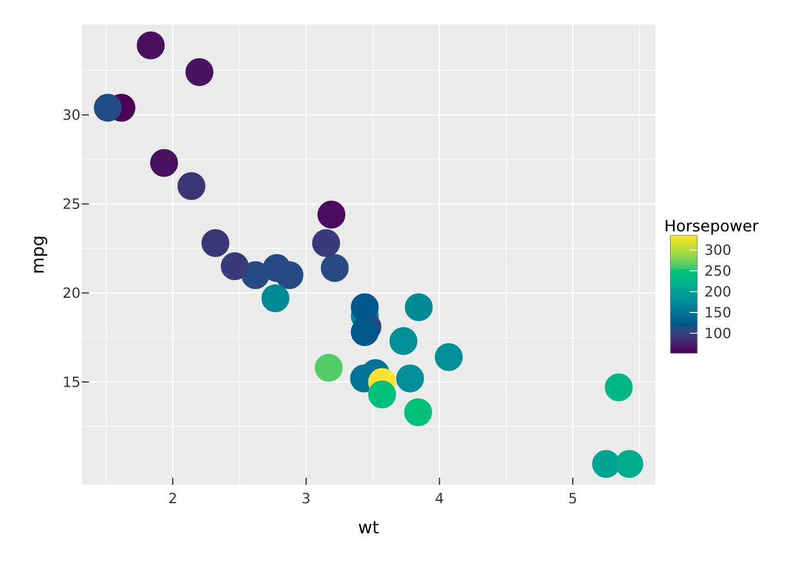
A scale is the function that turns a data value into something you can see: a colour, a marker size, a shape, or a position along an axis. In vellumplot every mapped encoding gets a scale automatically, trained from the data, so most plots need no explicit scale at all. You reach for a scale_*() call only when you want to override the default: change the palette, set a transform, fix the limits, or rename the guide.
The key idea is training. When you map color = hp, vellumplot scans the hp values across every layer, works out the domain, and builds a continuous colour scale with a legend. Add a scale_*() and you are declaring an override on top of that trained default, not replacing the whole machine.
Continuous data get a smooth colour ramp; discrete data get a categorical palette. The palette argument takes a vector of colours or a single palette name passed to grDevices::hcl.colors() (for example "Batlow", "Blues", "Set 2").
vplot(mtcars) |>
mark_point(x = wt, y = mpg, color = hp, size = 3) |>
scale_color_continuous(palette = "Viridis", name = "Horsepower")
For a two-colour ramp, scale_color_gradient() takes the endpoints directly. For categories, scale_color_manual() maps levels to colours; naming the values pins each level to a specific colour.
vplot(mtcars) |>
mark_point(x = wt, y = mpg, color = factor(cyl), size = 3) |>
scale_color_manual(values = c("4" = "#1b9e77", "6" = "#d95f02", "8" = "#7570b3"))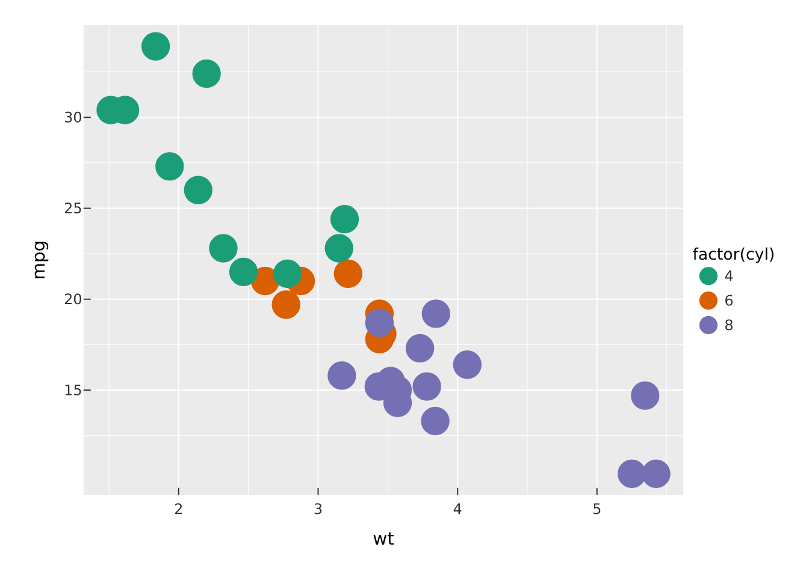
For signed or anomaly data — where a value like zero is meaningfully neutral — scale_color_gradient2() (and scale_fill_gradient2()) draw a diverging ramp around a midpoint. It rescales about the midpoint, so the neutral mid colour always lands on that value even when the data range is lopsided:
anom <- data.frame(x = 1:20, y = 1:20, resid = seq(-3, 6, length.out = 20))
vplot(anom) |>
mark_point(x = x, y = y, color = resid, size = 3) |>
scale_color_gradient2(low = "#2166ac", mid = "grey90", high = "#b2182b", midpoint = 0)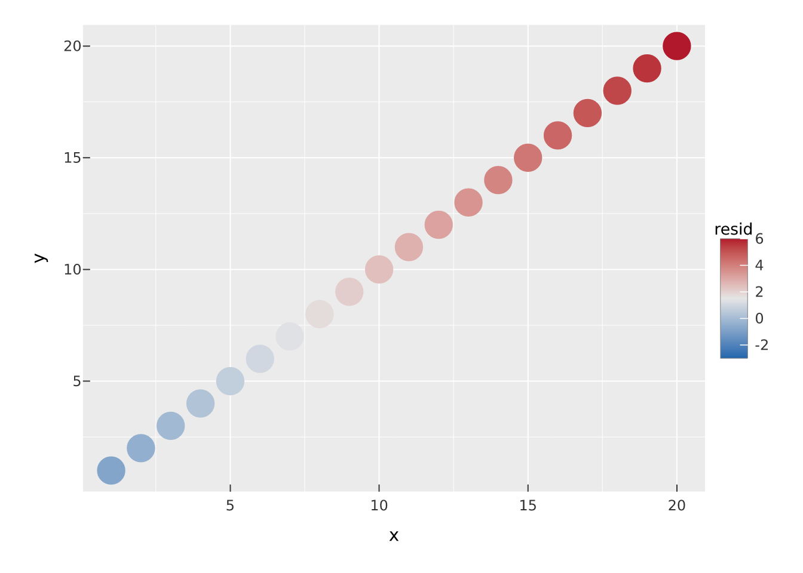
Ramps built from a plain colour vector — a scale_color_gradient(low, high), or a palette given as colours — are interpolated in the perceptually-uniform Oklab space, not sRGB, so the ramp and its colourbar read evenly instead of dipping through a muddy, over-dark middle (a blue→yellow ramp no longer passes through grey). Designed perceptual palettes such as the default Batlow or any hcl.colors() name are already uniform and unchanged. To blend in sRGB (or CIE Lab) instead, set options(vellumplot.color.interpolation = "srgb") (or "lab"). A gradient fill opts in per gradient with linear_gradient(..., interpolation = "oklab").
scale_fill_binned() and scale_color_binned() cut a continuous aesthetic into classes and give it a discrete legend, which is what you want for a choropleth or a heatmap you read by band rather than by exact value. Choose the classification style ("quantile", "equal", "pretty", or any classInt::classIntervals() style) and the number of classes n.
grid <- expand.grid(x = 1:10, y = 1:10)
grid$z <- with(grid, x * y)
vplot(grid) |>
mark_tile(x = x, y = y, fill = z) |>
scale_fill_binned(style = "quantile", n = 5, palette = "Mako")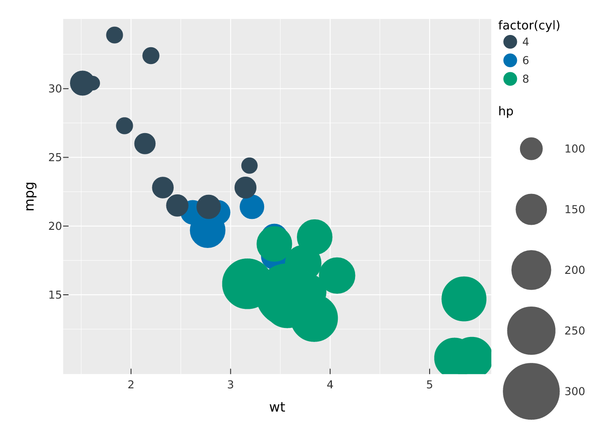
Non-colour aesthetics have scales too. scale_size() maps values linearly to a marker-size range (in mm); scale_shape() cycles a set of shapes over the levels of a discrete aesthetic; scale_edge_width() does for network edges what scale_size() does for points.
The shape palette is "circle", "square", "triangle", "diamond", "plus", "cross", "triangle_down", and "star" — eight in all, so a mapped shape covers up to eight levels automatically. Pass a subset (or a reordering) with scale_shape(values = ...). Filled shapes take the mark’s fill/color, so an open marker is fill = NA with a color.
vplot(mtcars) |>
mark_point(x = wt, y = mpg, size = hp, color = factor(cyl)) |>
scale_size(range = c(2, 9), name = "hp")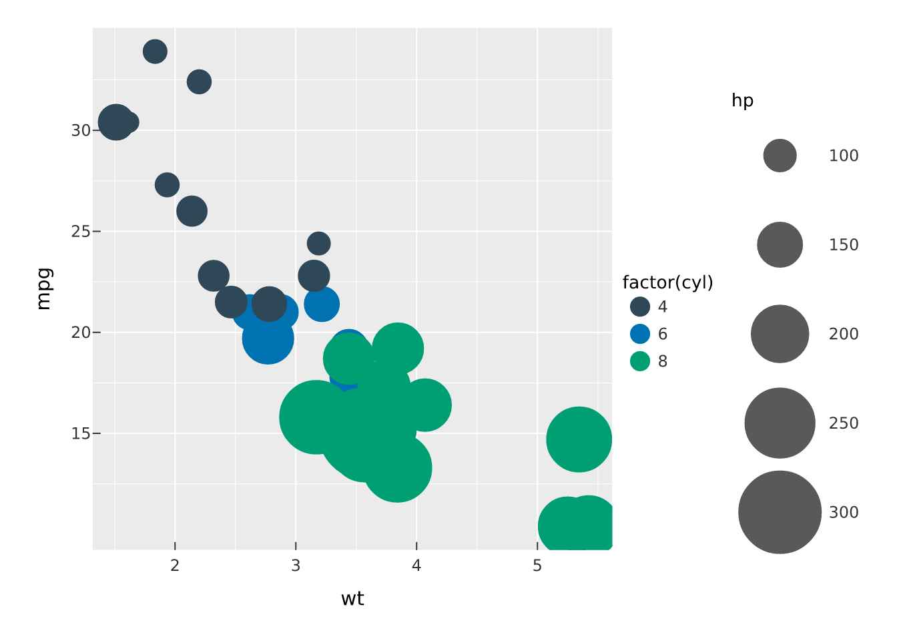
scale_size() maps the value to the marker’s radius. For bubble charts prefer scale_size_area(), which maps to the area (value 0 → size 0) so the ink is proportional to the value — the honest encoding:
vplot(mtcars) |>
mark_point(x = wt, y = mpg, size = hp) |>
scale_size_area(max_size = 10)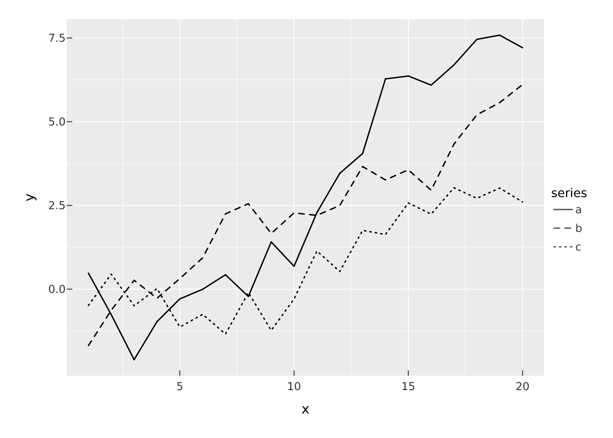
alpha and linetype are mapped aesthetics too. scale_alpha() maps a continuous variable to opacity (its range defaults to c(0.1, 1)), a good way to let density show through an overplotted cloud.
vplot(mtcars) |>
mark_point(x = wt, y = mpg, alpha = hp, size = 3) |>
scale_alpha(range = c(0.2, 1))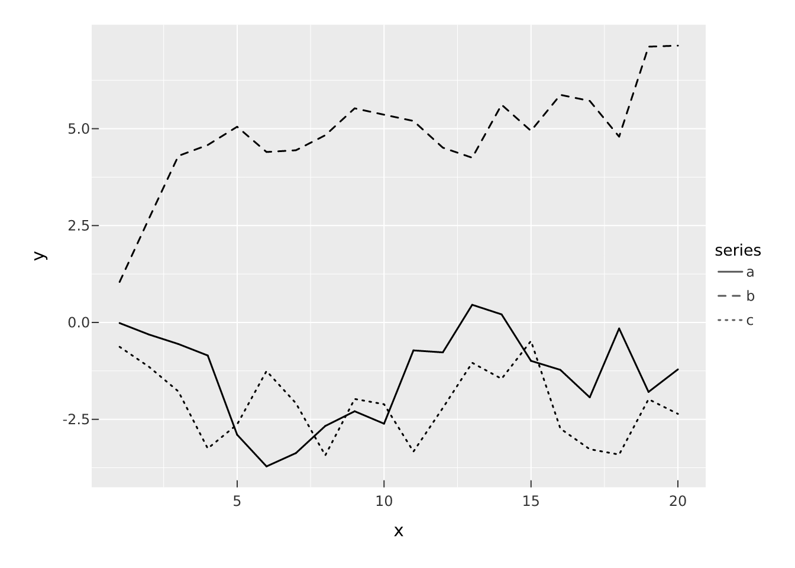
scale_linetype() maps a discrete variable to line types, cycling "solid", "dashed", "dotted", and so on. It applies to line-like marks (mark_line(), mark_step()).
Sometimes a column already holds the exact aesthetic values you want: actual colour names, sizes in millimetres, shape names. An identity scale uses them verbatim and draws no legend. There is a variant for each aesthetic: scale_color_identity(), scale_fill_identity(), scale_size_identity(), scale_shape_identity(), scale_alpha_identity(), scale_linetype_identity().
df <- data.frame(
x = 1:5, y = 1:5,
col = c("firebrick", "goldenrod", "forestgreen", "steelblue", "purple")
)
vplot(df) |>
mark_point(x = x, y = y, color = col, size = 6) |>
scale_color_identity()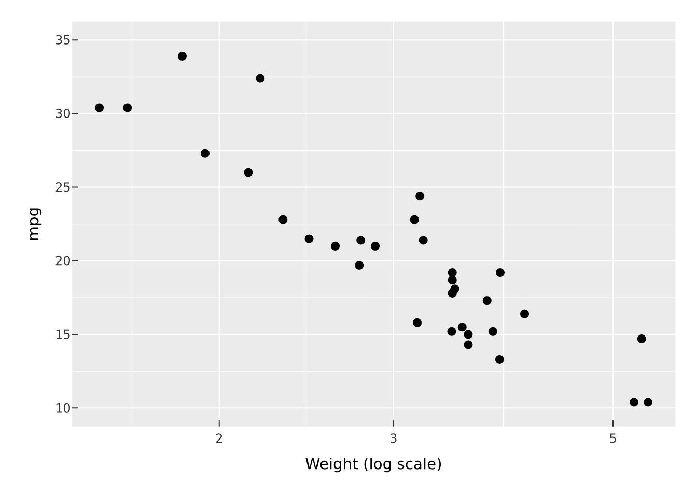
scale_x_continuous() and scale_y_continuous() control the axes. By default they train from the data with a small expansion; override them to set limits, apply a trans ("log10", "sqrt", "symlog", "reverse"), or supply explicit breaks and labels. Categorical axes use scale_x_discrete() and scale_y_discrete(), whose limits set the order or subset of levels.
vplot(mtcars) |>
mark_point(x = wt, y = mpg) |>
scale_y_continuous(limits = c(10, 35), breaks = seq(10, 35, 5)) |>
scale_x_continuous(trans = "log10", name = "Weight (log scale)")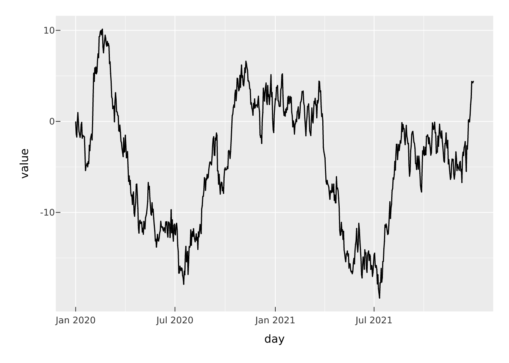
Where "log10" cannot go — data that crosses zero or spans positive and negative values over several orders of magnitude — "symlog" gives a symmetric-log axis: linear through zero, logarithmic in each tail, with ticks at zero and signed powers of ten.
signed <- data.frame(v = c(-1000, -100, -10, 0, 10, 100, 1000), y = 1:7)
vplot(signed) |>
mark_point(x = v, y = y) |>
scale_x_continuous(trans = "symlog")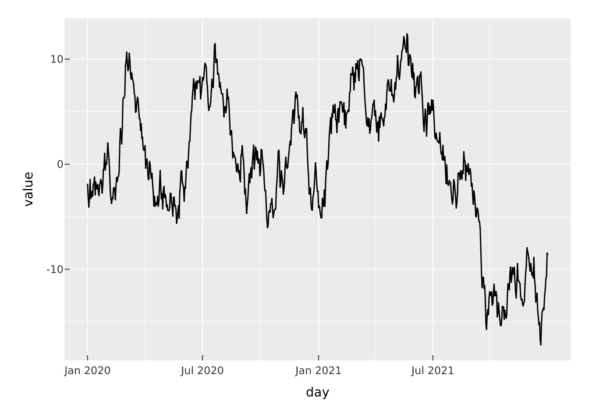
To set limits without spelling out a whole scale, use the shortcuts xlim(), ylim(), and lims() (the last takes one named argument per aesthetic):
vplot(mtcars) |>
mark_point(x = wt, y = mpg) |>
lims(x = c(0, 6), y = c(0, 40))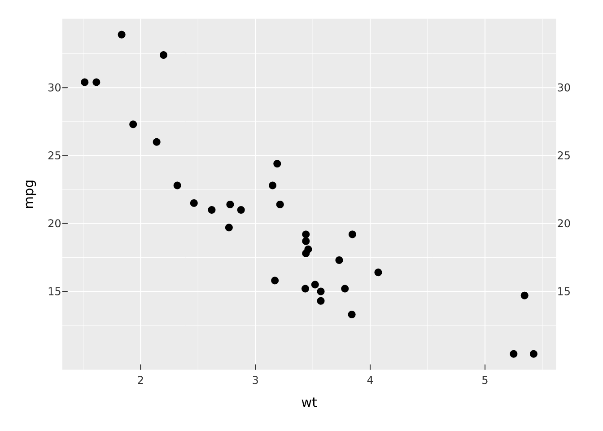
A scale_*(trans=) (above) transforms the data: it picks its breaks in the transformed space, so a "log10" axis is labelled 1, 10, 100. coord_trans() instead warps only the display, after the scale has trained — the breaks stay at their original data values, so the axis keeps those labels but they sit at warped positions (gridlines bunch up, and straight lines curve). Use it to show data on a log display without relabelling the axis in powers of ten:
vplot(mtcars) |>
mark_point(x = wt, y = mpg) |>
mark_line(x = wt, y = mpg) |>
coord_trans(y = "log10")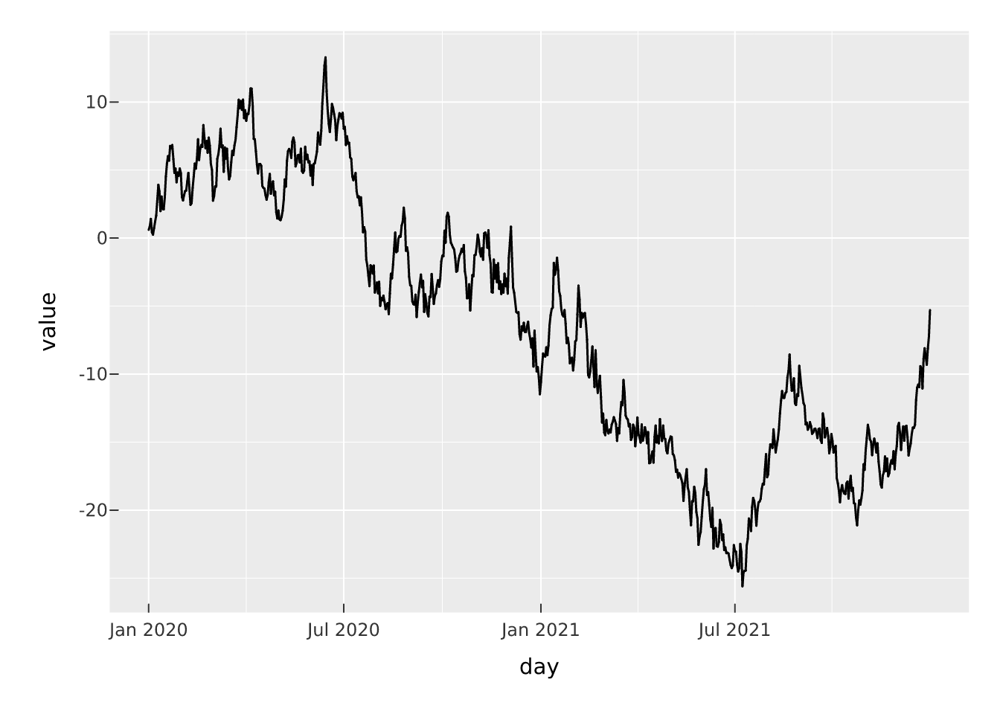
Each of x / y takes a transform name ("log10", "sqrt", "identity") or a scales::transform_*() object. It applies to the common marks (points, lines, areas, bars, tiles, smooths, text); interval/segment, boxplot, and raster marks are not warped yet.
A secondary axis adds a second set of ticks and labels on the opposite edge (top for x, right for y), computed as a 1:1 monotonic transform of the primary axis. Pass sec_axis() to the sec.axis argument of a continuous position scale. The classic use is a unit conversion — plot in Celsius, label the top in Fahrenheit:
vplot(data.frame(celsius = 0:100, y = (0:100)^2)) |>
mark_line(x = celsius, y = y) |>
scale_x_continuous(name = "°C", sec.axis = sec_axis(~ . * 1.8 + 32, name = "°F"))
dup_axis() is the identity special case — it simply duplicates the axis on the far edge, handy for reading a wide plot from either side:
vplot(mtcars) |>
mark_point(x = wt, y = mpg) |>
scale_y_continuous(sec.axis = dup_axis())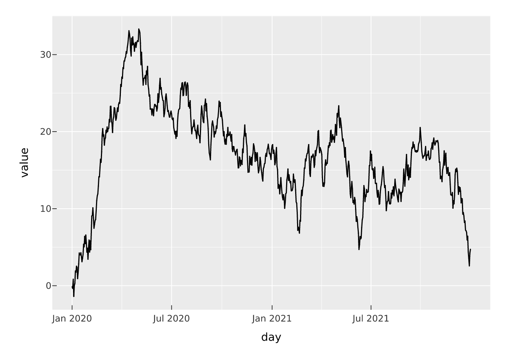
The transform can be a formula (~ . * 2), a function, or a scales::transform_*() object, and must be monotonic. This is a labelling convenience, not an independent second axis with its own data. It is currently supported on continuous position scales under the default Cartesian coordinate system, with shared scales across facets; combining it with coord_flip() / coord_polar() / coord_trans(), with free facet scales, or with add_marginal() raises an error, and in a plot composition the secondary axis is not drawn.
A Date or POSIXct column gets a date axis automatically. To control the break interval or the label format, declare scale_x_date() (or scale_x_datetime() / scale_x_time()): date_breaks takes an interval string like "6 months", and date_labels a strftime() format.
econ <- data.frame(
day = as.Date("2020-01-01") + 0:729,
value = cumsum(rnorm(730))
)
vplot(econ) |>
mark_line(x = day, y = value) |>
scale_x_date(date_breaks = "6 months", date_labels = "%b %Y")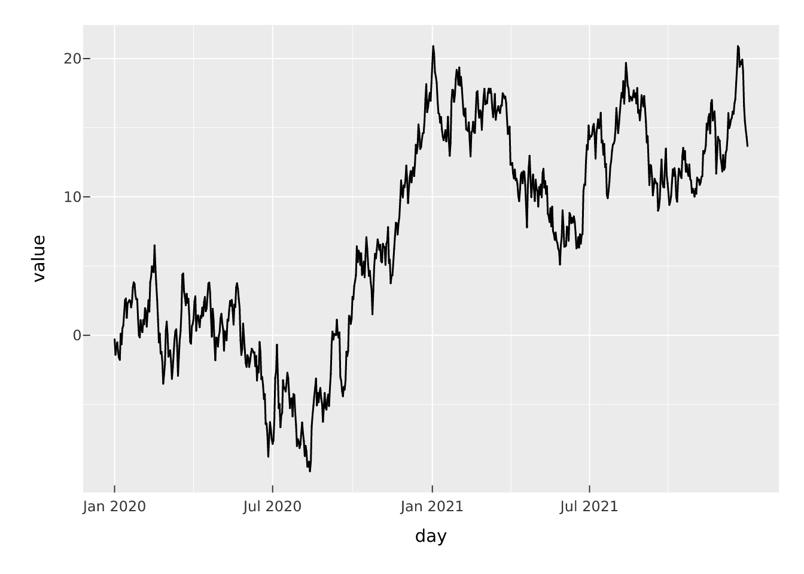
Every scale that needs a legend produces one, and vellumplot stacks multiple legends automatically. Map two aesthetics and you get two guides without asking.
vplot(mtcars) |>
mark_point(x = wt, y = mpg, color = hp, size = disp) |>
scale_color_continuous(palette = "Batlow", name = "Horsepower") |>
scale_size(range = c(1, 8), name = "Displacement")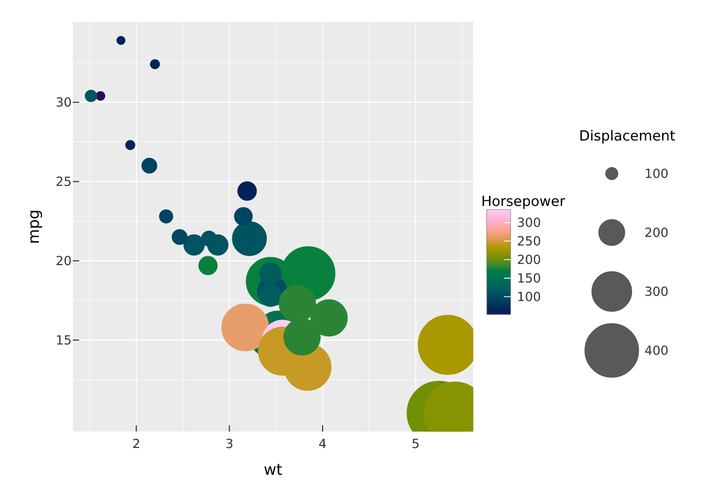
guides() overrides a single legend without respelling its scale. Pass "none" to hide it, or guide_legend() to reverse the key order or override the title.
vplot(mtcars) |>
mark_point(x = wt, y = mpg, color = factor(cyl)) |>
guides(color = guide_legend(title = "Cylinders", reverse = TRUE))
Hiding a legend keeps the mapping; the marks stay coloured, only the guide disappears:
vplot(mtcars) |>
mark_point(x = wt, y = mpg, color = factor(cyl)) |>
guides(color = "none")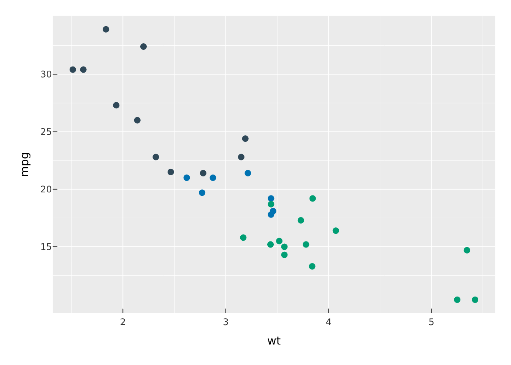
Any scale name (and any labs() title) accepts md(), a small markdown subset for bold, italic, superscript, subscript, and coloured spans. Handy for units and formulae.
vplot(mtcars) |>
mark_point(x = wt, y = mpg, color = hp) |>
scale_color_continuous(name = md("Power (hp m^2^)"))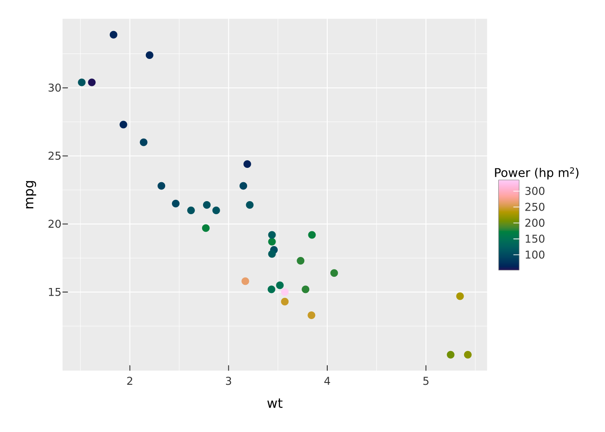
Faceted plots add one more question: should panels share a scale or train their own? That is the resolve_scale() lattice, covered in Facets and composition. For stat-derived aesthetics like after_stat(count), see Statistical marks.